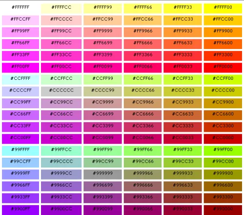
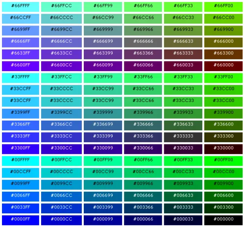

В какой-то момент существовала проблема отображения цветов в различных браузерах, и для ее решения была скомпонована так называемая «безопасная» палитра RGB цветов, которые были выведены математическими вычислениями.
Когда браузер не может корректно отобразить цвет, он делает попытки получить близкий к необходимому путем смешивания соседних цветов, и скорее всего результат будет совершенно неприемлем:
Используя коды цветов RGB из палитры, веб-разработчик может не бояться за отображение цветов на страницах своего сайта при просмотре с помощью различных браузеров, на различных платформах и мониторах. Хотя на данный момент таблица безопасных цветов теряет свою актуальность (технический прогресс все же не стоит на месте), при ее использовании можно, что называется, спать спокойно.
 